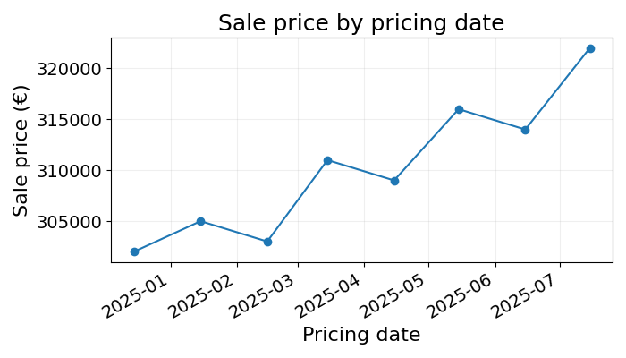
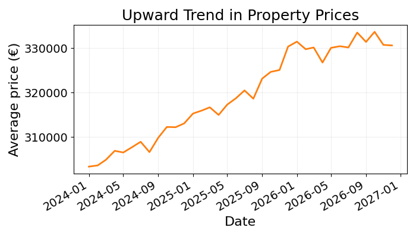

18 Representing Dates
The world is in a constant state of change. Time is the concept we have created to reason about the wild sequence of events that we order in past, present and future. At our human scale, this time is represented using standard units such as: year, month, day, hour, minute and second.
I am writing these lines on Friday the 15th of August 2025 at 08:31 AM. Using the ISO 8601 standard, this point in time can be represented as: 2025-08-15T08:31:00. The following can be extended to also include my time zone: 2025-08-15T08:31:00+02:00, the +02:00 at the end.
18.1 Dates and Prediction
Time indications like dates can contain information that can improve the quality of Machine Learning model predictions.
18.1.1 Overall Trend
In the property pricing example, in which a Machine Learning model is trained to predict property prices from its characteristics like their surface area or number of rooms. Let’s use the following training data as an example:
| Surface (m²) | Pricing date | Sale date | Sale price (K€) |
|---|---|---|---|
| 85 | 2024-12-15 | 2025-02-13 | 302 |
| 86 | 2025-01-15 | 2025-03-16 | 305 |
| 84 | 2025-02-15 | 2025-04-16 | 303 |
| 87 | 2025-03-15 | 2025-05-14 | 311 |
| 85 | 2025-04-15 | 2025-06-14 | 309 |
| 86 | 2025-05-15 | 2025-07-14 | 316 |
| 84 | 2025-06-15 | 2025-08-14 | 314 |
| 87 | 2025-07-15 | 2025-09-13 | 322 |
Which date column would you use to predict the sale price and why? The selling date could seem like a good idea. However, when pricing properties that have not been sold yet, this information is not available to the model. We do not yet know the sale date. The only date available to the pricing model would be the pricing date, date at which the property is put on the market.
For this reason, the sale date cannot be used in the model. The pricing date can still contain useful price information. Plotting the average sale price by pricing date (from the example data), we see the following trend:

18.1.2 Seasonality
Changing example, let’s say that as the manager of a pub, you are trying to predict the quantity of beer the bar will sell next week. Having an accurate beer sales forecast could help you better plan your staff and inventory. If you predict to sell a lot of beer, you should buy a lot of inventory and hire a larger team.
Beer sales over the last two years look like this:

From this chart, we could see both an upward trend and seasonality effects. The next section will investigate how to encode this information into numbers.
18.2 Encoding Dates as Numbers
As described in previous chapters, Machine Learning models generate predictions by learning the relationships between inputs and outputs. To do so, they represent each observation as a list of numbers, and use mathematical tricks (like distance or space splitting) to map features to a target variable.
To make dates readable to a model, they need to be encoded as numbers. Take a moment to think about how you would represent 2025-08-15T08:31:00 as numbers before reading on.
18.2.1 Splitting Dates into Parts
The date 2025-08-15T08:31:00 can be split into the following parts:
Year: 2025
Month: August, or 8
Week number: 33
Day: 15
Day of week: Friday, or 5 given a start at 1 on Monday
Hour: 8
Minute: 31
Second: 00
This date could then be represented as the following list of numbers: 2025, 8, 33, 15, 5, 8, 31, 00. These values could be used as normal numeric features.
Encoding the pricing date of the example data using this method, we get:
| Year | Month | ISO week | Day | … | Minute | Second |
|---|---|---|---|---|---|---|
| 2024 | 12 | 50 | 15 | … | 0 | 0 |
| 2025 | 1 | 3 | 15 | … | 0 | 0 |
| 2025 | 2 | 7 | 15 | … | 0 | 0 |
| 2025 | 3 | 11 | 15 | … | 0 | 0 |
| 2025 | 4 | 16 | 15 | … | 0 | 0 |
| 2025 | 5 | 20 | 15 | … | 0 | 0 |
| 2025 | 6 | 24 | 15 | … | 0 | 0 |
| 2025 | 7 | 29 | 15 | … | 0 | 0 |
That should already achieve good performance. You may notice that some date features may be more relevant than others depending on the task.
As an example, when predicting ice cream sales, the month of year, week number and day of week (e.g., Friday, Saturday, Sunday) could be important. Whereas the day number (e.g., 1 or 15) may not be such a significant feature. When pricing properties, the year and month of year could also be very important while the day number is practically irrelevant.
18.2.2 Representing Dates on Computers
The date splitting described above is a very good way to extract relevant information from a date. But is this the only way to represent dates as numbers?
Most computers use the number of seconds since a predefined point in time, also called the “epoch”. For systems based on UNIX, this starting point is the 1st of January 1970. The UNIX timestamp for 2025-08-15T08:31:00 is the number of seconds since the 1st of January 1970: \(1755239460\).
The more you know. Spreadsheet systems like Excel and Google Sheets store dates as the number of days since an epoch, and the time of day as the decimal part of a number between 0 and 1. This way, a datetime can be stored as a decimal number. Using Google Sheets to store the example date, we get: \(45 884.35\). With \(45884\) being the number of days since the 1st of January 1900 and \(.35\) representing 08:31, very close to a third of the 24-hour day.
Why go through the trouble of learning about this alternative representation? It turns out that representing time as a continuous number like the number of days since a given date can help model trends.
Going back to the example of property prices over time, imagine that the average price evolves in the following way:

Having a feature that represents a point in time, can help determine the price of a property taking this upward trend into account. For example, a model could learn that the average price of property increases by 1% every 130 days.
Replacing the date features by their UNIX timestamp, we get the following table:
| Property | Pricing date (UTC 09:00) | UNIX timestamp |
|---|---|---|
| A | 2024-12-15 09:00:00 | 1734253200 |
| B | 2025-01-15 09:00:00 | 1736931600 |
| C | 2025-02-15 09:00:00 | 1739610000 |
| D | 2025-03-15 09:00:00 | 1742029200 |
| E | 2025-04-15 09:00:00 | 1744707600 |
| F | 2025-05-15 09:00:00 | 1747386000 |
| G | 2025-06-15 09:00:00 | 1749978000 |
| H | 2025-07-15 09:00:00 | 1752570000 |
18.3 Final Thoughts
It was about time to end this section. We covered two different ways to encode date features for a Machine Learning model:
- Splitting dates into their parts
- Represent dates as number of seconds or days since a given epoch
There is no optimal way to encode date features, it always depends on the problem at hand. For what you are trying to predict, how does time enter the picture?
That is all on alternative data types. Now that we can convert any data type to numbers, the next two chapters will explore scenarios in which data is missing.